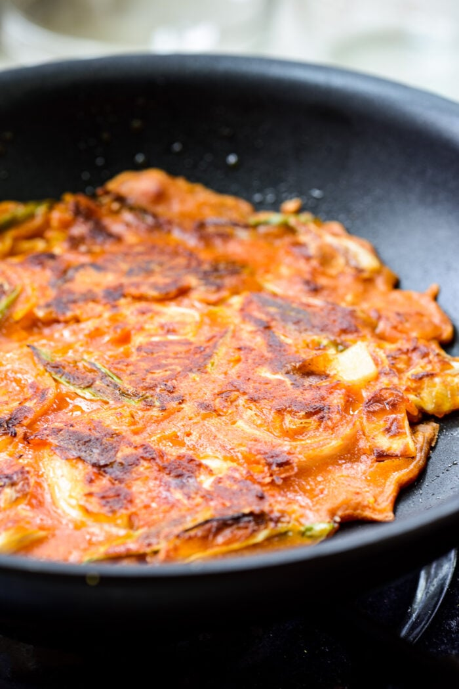

Kimchi Pancakes

Ingredients
- 1 cup thinly sliced fully-fermented kimchi
- 1 to 2 scallions two if thin and small
- 1/4 medium onion
- 3 ounces minced pork, canned tuna (without the liquid), or squid cut into small strips - optional
- cooking oil with high smoke point for pan frying
Batter
- 1 1/4 cups all-purpose flour or buchimgaru (Korean pancake premix) or Swap 1/4 cup of all-purpose flour with sweet rice flour or corn/potato starch
- 2 to 3 tablespoons juice/liquid from kimchi See note on water below See note on water below
- 1 or 2 teaspoons gochujang (Korean chili pepper paste) or gochugaru - optional
- 1 lightly beaten egg - optional
- 1 cup icy cold water Use more water if juice/liquid from kimchi is unavailable and not using an egg. Flour to liquid should be about 1:1 ratio in total.
Optional Dipping Sauce
Combine all the Ingredients
- 1 tablespoon soy sauce
- 1 teaspoon vinegar
- 1 tablespoon water
- 1/2 teaspoon sugar
- pinch of black pepper
Steps
- Thinly slice the kimchi, about 1/2-inch thick. Cut the scallions into about 2-inch pieces. If the white part is thick, cut in half lengthwise. Thinly slice the onion.
- In a large bowl, combine the flour (or pancake mix) with the liquid from kimchi, the optional gochujang/gochugaru and egg, and water, a little bite at a time. Start with dissolving the gochujang with water, and mix everything together. Do not over mix.
- Add a little more water if the batter is too thick. The batter should flow easily from a spoon.
- Stir in the kimchi, scallions, onion and the optional protein of your choice.
- Heat one tablespoon of oil in a non-stick pan over medium heat. Ladle the mixture into the pan, and spread it evenly into a thin round shape. Cook until the edges turn light golden brown, about 3 minutes. Turn it over, and add more oil to the sides of the pan. Gently swirl the pan to distribute the oil under the pancakes. Press the pancake down with a spatula. Cook until the other side is nicely browned and crispy, 2 to 3 minutes.
- Repeat the process until there is no remaining batter. Serve hot with a dipping sauce, if desired.
So delicious!